Larry The Dinosaur 2The Official Strategy Guide |
|
|
Guide Sections Home Building Layout Walkthrough Part I Part II Part III Part IV |
After the conversation, head to the weapons locker to meet up with Barney and access
the back room of the weapon's locker. 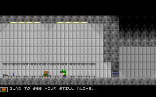 Larry and Barney chit-chat a little bit, then head to the back room. Barney mentions that they must find the red-access card now. 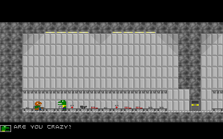 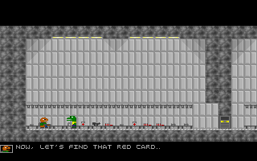 Since you have the yellow card, you don't need the blue one anymore, so you can drop that. Since there is a machine-gun there that takes the same ammo as the pistol and shoots alot faster, you can pick that up and drop the pistol. You no longer need the janitor's note either. The one thing you do need in that room are the batteries. You can pick those up, because you'll need them later. If you have a desert-eagle, the ammo in there would be useful since deagle ammo isn't very abundant. Head to the basement. 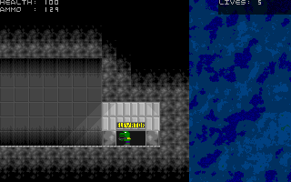 Run all the way to the back and pick up the flashlight. 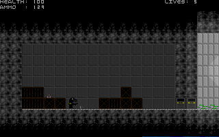 Mix the batteries with the flashlight. Then head to the 9th floor. 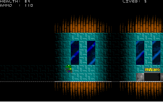 Go to the back of that room also. Once your all the way in the dark, use the flashlight. 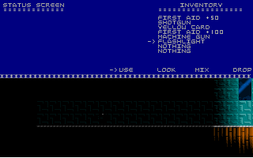 Clunk!! 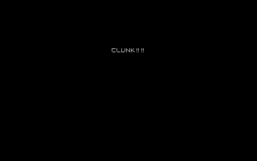 Larry wakes up and finds Steve with him. 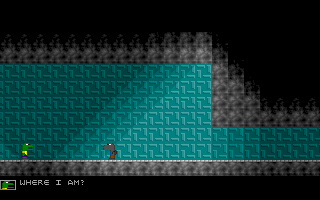 Then Larry contacts Barney, and Barney reveals his evil plan and babbles on about some portal he and some other fellows built...yada yada yada. After that, Larry and Steve chat a bit. Steve mentions how there's no way out because he couldn't find one. Don't listen to him. The way out is some open vent you'll find if you head all the way to the right. 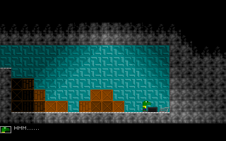 Once Larry and Steve crawl through the vent, Steve gives Larry a little something. It's on the floor next to Larry's feet after the conversation, so just pick it up and you'll find that it's half of a white card. The other half is on the 16th floor all the way in the back. 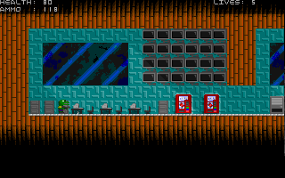 Pick that up if you don't have it and mix it with the other half to get a full white card. There's only one door in the entire building that opens with a white card only, it's on floor 11. 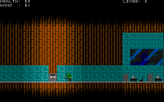 Behind that door lay the red card. 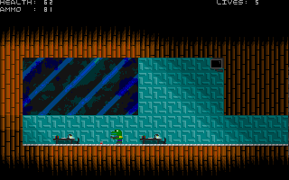 Once you pick up that red card, you could leave the building, but you can't yet because Larry won't leave without Steve. Make sure you grab some health and ammo, then head to the 21st floor. 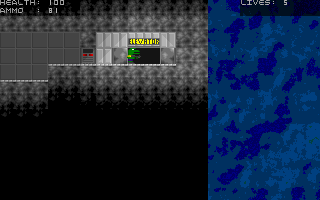 Oh no! Larry runs into a trap! 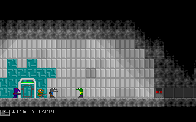 Continue to Part IV |